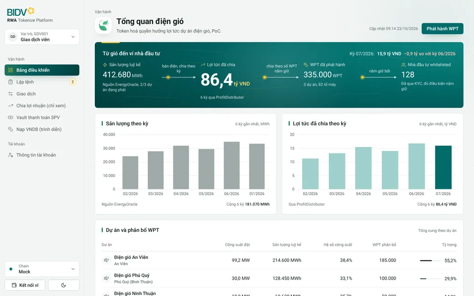
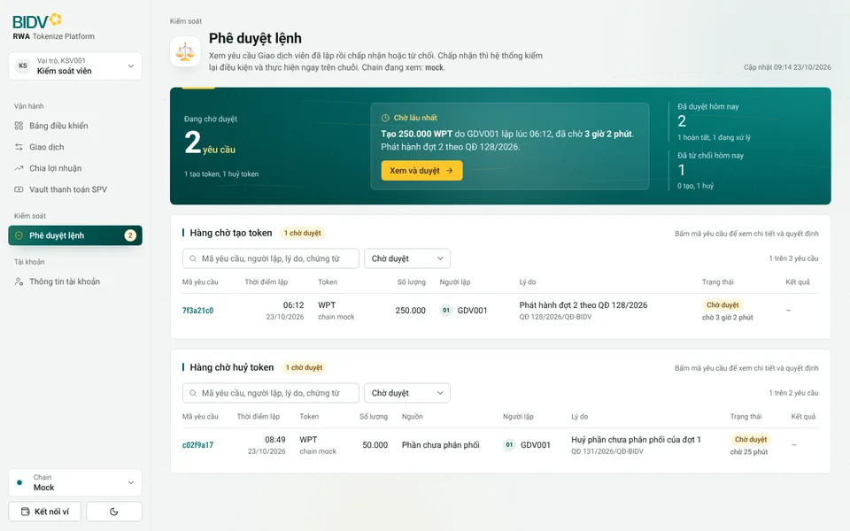
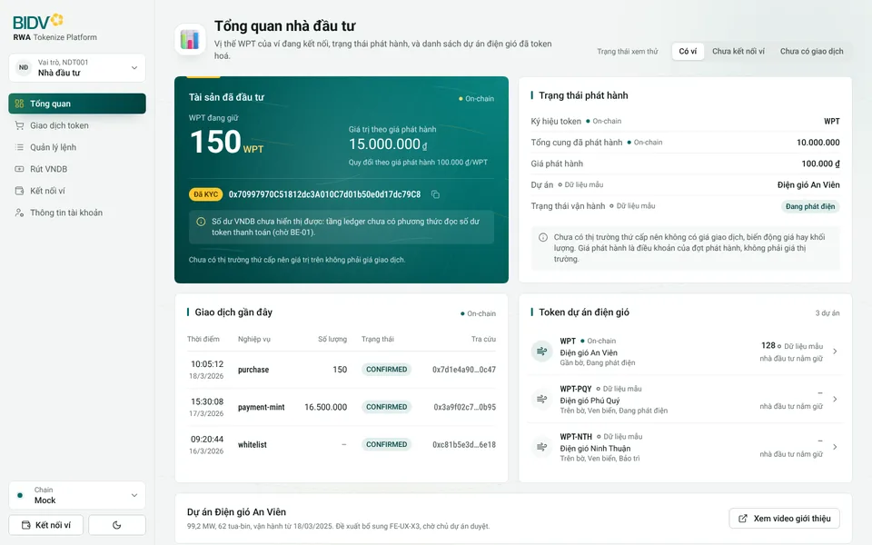
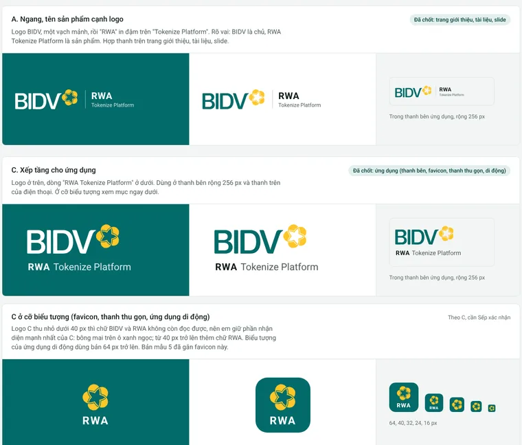

Giữ nền của bản 4 (màu thương hiệu xanh ngọc, Roboto, số liệu thẳng cột, mỗi màn trả lời một câu hỏi) và đưa lại đường nét, điểm nhấn, hiệu ứng của bản 3. Mỗi màn có đúng một khối trọng tâm xanh ngọc đậm mang con số quan trọng nhất; các khối khác giữ nền trắng để mắt biết nhìn vào đâu trước.
Bấm để mở bản chạy được. Thử: rê chuột trên menu trái, đổi Mua hoặc trạng thái xem thử, bấm nút, đổi sáng tối ở cuối thanh bên, cuộn trang để thấy các khối lướt vào.



A cho trang giới thiệu, tài liệu, slide; C cho ứng dụng. Logo BIDV vector hoá tạm từ ảnh Sếp gửi, thay bằng SVG chính thức khi có.

| Hạng mục | Giữ từ bản 4 | Thêm lại từ bản 3 |
|---|---|---|
| Trọng tâm | Mỗi màn trả lời một câu hỏi, con số trả lời to nhất | Một khối xanh ngọc đậm có vân gió mảnh, gạch vàng ở mép trên, chữ trắng, số chính 52 px |
| Màu | Xanh ngọc #016B69, nền xám xanh rất nhạt, thẻ trắng | Chuyển sắc xanh ngọc trong khối trọng tâm và viên nang menu; vàng bông mai làm điểm nhấn nhỏ (nút chính trong khối trọng tâm, chấm chạy, thẻ KYC) |
| Đường nét | Viền mảnh, bảng thẳng cột | Gạch xanh ngọc trước tiêu đề thẻ, đường gió mảnh chạy trên nền trang và trong khối trọng tâm, vạch xanh khi rê chuột trên dòng bảng |
| Menu | Logo C, dropdown Vai trò và Chain trong thanh bên | Viên nang xanh ngọc có vệt sáng vàng, kéo giãn theo vận tốc khi rê chuột, trượt từ mục cũ sang mục mới khi đổi trang; số việc chờ nhấp nháy nhẹ |
| Vào trang | Không có | Cơn gió quét qua khi mở trang; tiêu đề hiện từng từ; biểu tượng 3D nảy ra; khối trọng tâm mở từ trái sang; khối khác lướt lên theo hướng gió; dòng bảng hiện lần lượt |
| Số và biểu đồ | Số căn phải, chữ số đều cột | Số lăn như đồng hồ; cột biểu đồ mọc từ đáy bằng lò xo; rê chuột làm mờ các cột khác |
| Phản hồi thao tác | Nút nhún, dropdown lò xo, vòng tròn đổi sáng tối | Ánh sáng theo chuột trên thẻ, thẻ nhấc lên khi rê, nút chính hút nhẹ theo con trỏ và có vệt sáng, gợn sóng khi bấm, icon vẽ lại nét |
Bản mẫu tĩnh để duyệt giao diện, dữ liệu mẫu, không có chức năng thật. Icon 3D Fluent Emoji (MIT), logo BIDV vector hoá tạm từ ảnh chủ dự án gửi.